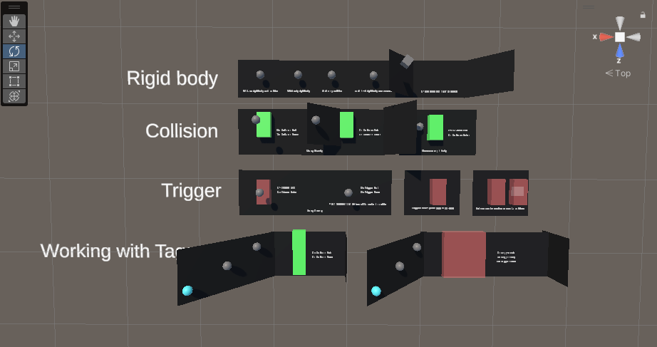

Physics Engine: Rigidbody, Collider, Collisions, Triggers
üì¶ Unity packages from today's class:
- Class Demo: Rocketship
- The previous instructor for the Game Engine course, John Brumley made a wonderful sandbox to illustrate how Rigidbodies, collisions, triggers, and object tags can be used. You may find the package link here.

Remember when we used Transforms and vector math to move objects?
In our accelerated velocity example, we used vector math to achieve an ease-in ease-out transition of the cube's change in position over time. This gave our cube the illusion of mass and physicality.
velocity += acceleration * Time.deltaTime;
position += velocity * Time.deltaTime;

But what if we were to consider other factors like an object's physical properties (e.g. mass, torque, bounciness) or other external forces (e.g. gravity, friction, collisions with other objects...)?
Using pure vector math to simulate physically "realistic" movement would still be possible -- it would just become more complicated!
.
.
.
What if I told you Unity has an entire system in place for simulating physics-based motion? üëÄ
Physics Engine
The two main components you will work with are the Rigidbody and the Collider
Rigidbody
Read Unity's overview of Rigidbody physics and their documentation on the Rigidbody class in the Unity Manual and Scripting API.

- Responsible for making an object move with physics
- Has properties like mass, drag, and angular drag, which affect the way an object responds to collisions and forces
- Movement and rotation can be constrained along the X, Y, and Z axes
- Moves independently, regardless of parent-child relationship.
Kinematic Rigidbodies
When isKinematic is "true", the rigidbody will not be affected by physics (i.e. animations have to be done by changing transform position in scripts or animation clips).
However, they can affect the motion of other rigidbodies through collisions (if detectCollisions is "true") or joints (if connected to a non-kinematic rigidbody with a joint.)
Collider
- A shape that the physics engine uses to detect when objects touch
- Comes in several shapes like sphere, box, and capsule*.
(*Note: There are also mesh colliders that take the shape of any custom mesh of choice -- these offer more accurate details in collider shapes, but have some limitations with their range of use.) - Multiple can be combined to make more complex shapes.
- Optionally can add a Physic Material to change bounciness and friction of an object.
- In the scene view, colliders are visualized with a green outline, and can have its scale, position, and sometimes orientation transformed using Edit Collider or the Edit Bounding Volume tool.
Moving a Rigidbody
Using with Forces & Torque
Read about Rigidbody.AddForce() and Rigidbody.AddTorque() method functions in Unity's Scripting API.

This simple spacecraft is controlled in 2D using force and torque.
We can "push" rigidbodies by applying force to them, and make them spin by applying torque. This technique makes for more physically realistic motion, but can be difficult to control.
Use FixedUpdate() to update physics-based methods like AddForce() and AddTorque().
using UnityEngine;
public class Rocketship : MonoBehaviour
{
Rigidbody rbody;
bool rocketBoost = false;
float spin = 0f;
// Start is called before the first frame update
void Start()
{
rbody = GetComponent<Rigidbody>();
}
// Update is called once per frame
void Update()
{
//get input in the update function!
rocketBoost = Input.GetKey(KeyCode.Space);
spin = Input.GetAxis("Horizontal"); //-1 : 1
}
//use fixedupdate to update physics
//its more consistent than update!
private void FixedUpdate()
{
if (rocketBoost == true)
{
//pushes the rigidbody
rbody.AddForce(transform.up * 100);
//transform.up gives us up relative to this object's oriention
}
//spins the rigidbody
rbody.AddTorque(new Vector3(0, 0, 1) * spin * 30f);
}
}
MovePosition
Read about Rigidbody.MovePosition() in Unity's Scripting API.
Sometimes, we want an object to be able to move in a more controlled way, while still affecting other rigidbodies. This is where MovePosition comes in.
The move position function automatically calculates what forces to apply to a rigidbody to move it to a given position. This offers more control over the object's motion.
To make it so an object like this is less affected by other objects and forces, make sure to increase its mass and drag.

using UnityEngine;
public class MovePositionDemo : MonoBehaviour
{
Rigidbody rbody;
float h;
public float speed = 4f;
// Start is called before the first frame update
void Start()
{
rbody = GetComponent<Rigidbody>();
}
// Update is called once per frame
void Update()
{
h = Input.GetAxis("Horizontal");
}
private void FixedUpdate()
{
Vector3 newPosition = transform.position;
newPosition += Vector3.right * h * speed * Time.deltaTime;
//move the rigidbody to a given position
rbody.MovePosition(newPosition);
}
}
Collision Detection
Use the following functions to detect when a collision occurs.
public class CollisionDemo:MonoBehaviour
{
void OnCollisionEnter(Collision collision)
{
//occurs the moment a collision begins
Debug.Log("collision began with " + collision.gameObject.name);
}
void OnCollisionStay(Collision collision)
{
//occurs continuously while two objects touch
Debug.Log("touching " + collision.gameObject.name);
}
void OnCollisionExit(Collision collision)
{
//occurs the moment two objects stop touching
Debug.Log("collision with " + collision.gameObject.name + " ended");
}
}
Note that these functions only work in a script attached to a game object with a rigidbody and a collider. The variable collision provides information about what was hit.
For example, you could get the tag belonging to the collider's GameObject.
void OnCollisionEnter(Collision collision)
{
if (collision.gameObject.tag == "Enemy"){
Debug.Log("Enemy hit!");
}
}
Collision Detection Modes
Discrete (default mode) is the least computationally demanding mode of collision detection, it's good for detecting slow collisions.
If you have fast-moving rigidbody collisions, try setting it to Continuous Speculative.
If you notice some missed or inaccurate collisions, try using Continuous for collisions with static objects, or Continuous Dynamic for collisions with other fast-moving objects.
Triggers
You can also use the physics engine to detect when one collider enters the space of another without creating a collision.
A collider configured as a Trigger (using the isTrigger property) does not behave as a solid object and will simply allow other colliders to pass through. This is useful for doors, collectables, and more.
When a collider enters its space, a trigger will call the OnTriggerEnter function on the trigger object’s scripts.
public class TriggerDemo:MonoBehaviour
{
void OnTriggerEnter(Collider other)
{
//occurs the moment an object enters the trigger
Debug.Log(other.gameObject.name + " entered the trigger");
}
void OnTriggerStay(Collider other)
{
//occurs while an object is in the trigger
Debug.Log(other.gameObject.name + " remains in the trigger");
}
void OnTriggerExit(Collider other)
{
//occurs the moment an object leaves the trigger
Debug.Log(other.gameObject.name + " left the trigger");
}
}
2D Physics
Adapting the above scripts and examples to 2D physics requires switching out certain component and function names to their 2D equivalents... which usually just involves adding “2D” to the end.
| 3D Physics | 2D Physics | |
|---|---|---|
| Components | Rigidbody | Rigidbody2D |
| Collider | Collider2D | |
| Collision | Collision2D | |
| Functions | OnCollisionEnter | OnCollisionEnter2D |
| OnCollisionExit | OnCollisionExit2D | |
| OnCollisionStay | OnCollisionStay2D | |
| OnTriggerEnter | OnTriggerEnter2D | |
| OnTriggerExit | OnTriggerExit2D | |
| OnTriggerStay | OnTriggerStay2D |
private void OnTriggerEnter2D(Collider2D other)
{
Debug.Log("2D trigger entered.");
}
Exercise
In preparation for Project 2...
OPTION A: Player Movement
Make a player character placeholder (capsule, cube, sphere) that moves along a plane using forces, torque, or MovePosition.
- what are the directions in which your player can move?
- how much friction should your player movement have?
- how is your character's motion affected by gravity, if at all?
You could also try using Input.GetAxis to map to arrowkeys, WASD, or MouseX/Y;
OR
OPTION B: Ball Movement
Make a simple prototype of the ball interaction for your game.
- a paddle or club hitting a ball?
- a ball throwing mechanic?
- how bouncy or heavy should the ball be?
For both exercise options, focus on getting the feeling of the interaction right!
Some course reminders
- Reading Response 2 is due on Thursday.